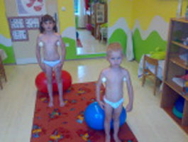
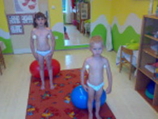
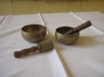

Senzomotorická stimulace
Pojem a ucelený terapeutický přístup SMS (senzomotorické stimulace) zavedl prof. Janda, přičemž vyšel ze studií Freemanových a prací Hervéoua a Mésséana. Anglický ortoped Dr.Freeman zavedl pojem útlum a inkoordinace, kterou vysvětloval na podkladě deaferentace z poraněného kloubu. Francouzští fyzioterapeuti Hervéu a Mésséan jeho přístup zdokonalili, avšak hlavními indikacemi zůstaly poruchy v oblasti nohy a kolenního kloubu. Pojem SMS zdůrazňuje jednotu senzorických (aferentních) a motorických (eferentních) struktur.
Senzomotorická stimulace vychází z koncepce o dvou stupních motorického učení. První stupeň je charakterizován snahou zvládnout nový pohyb a vytvořit základní funkční spojení. Na tomto procesu se výrazně podílí mozková kůra, a to hlavně oblast parietálního a frontálního laloku, tedy oblast motorická a senzorická. Řízení pohybu na této úrovni je však pomalé a únavné. Proto se po dosažení alespoň základního provedení pohybu CNS snaží přesunout řízení pohybu na nižší, podkorová centra. Tento druhý stupeň je rychlejší a méně únavný. Pomocí SMS se tento druhý stupeň motorického učení urychluje. Cílem senzomotorické stimulace je dosažení reflexní, automatické aktivace žádaných svalů a to v takovém stupni, aby pohyby nevyžadovaly výraznější kortikální, tj. volní kontrolu. V metodě jde tedy v zásadě o ovlivnění pohybu a vyvolání reflexního svalového stahu v rámci určitého pohybového stereotypu facilitací proprioceptorů, které se výrazně podílejí na řízení stoje a vertikálního držení a jednak na aktivaci spino-cerebro-vestibulárních drah a center, které se podílejí na regulaci stoje a provedení přesně adjustovaného a koordinovaného pohybu. Pomocí SMS lze dobře ovlivnit nejčastější pohybové aktivity člověka (sed, stoj, chůze). Cviky prováděné ve vertikále usnadňují rozbití špatných pohybových stereotypů a dosažení rychlé a automatizované aktivace svalů potřebné pro správné držení těla ve stoji, v sedě a pro zlepšení stability a chůze. Z hlediska aference hrají roli pro vzpřímené držení těla a rovnováhu hlavně receptory z oblasti chodidla, pánve a šíje.
Krátké suboccipitální svaly jsou považovány za svaly rovnováhy a obsahují čtyřikrát více proprioceptorů než ostatní svaly. Propriocepce z oblasti pánve výrazně ovlivňuje svalové napětí a stabilitu těla. Receptory plosky nohy lze facilitovat stimulací kožních receptorů nebo aktivací m. quadratus plantae s vytvořením zvýrazněné klenby nohy, tzv. „malé“ nohy. Vytvoření „malé“ nohy vede ke změně postavení prakticky všech kloubů nohy a změněnému rozložení tlaků v kloubech, což příznivě ovlivňuje proprioceptivní stimulaci.Významnou roli vedle koordinace hraje i rychlost aktivace a svalové kontrakce, která je nutná pro svalovou ochranu kloubů a také v tomto směru může senzomotorická stimulace výrazně přispět (Janda & Vávrová, 1992; viz také Haladová, 1997).
Indikace k rehabilitaci technikou senzomotorické stimulace:
- nestabilní kotník a koleno
- nedostatečná fixace svalstva pánve u chronických vertebrogenních algických syndromů
- vadné držení těla
- idiopatická skolióza
- mozečkové a vestibulární poruchy
- prevence v rámci zdravotní tělesné výchovy
Kontraindikace pro techniku SMS:
kontraindikace v zásadě nejsou, ale technika není vhodná:
- při akutních bolestivých a zánětlivých stavech
- u úplné ztráty povrchového i hlubokého čití
- u onemocnění CNS s projevy zvýšení spasticity (Janda & Vávrová, 1992; viz také Haladová, 1997).
Co je cílem metody SMS?
Odstranit a přesunout odpovědnost za řízení pohybu na podkorová centra. Předpokladem pro zautomatizování pohybu je volba vhodných cviků, dostatečné opakování a obměňování cviků, postupné zvyšování náročnosti, případně záměrné odpoutání pozornosti od prováděného pohybu. Fyzioterapeut musí zvolit vhodnou cvičební pomůcku a sestavit cvičební program s přihlédnutím k možnostem a schopnostem nemocného (Haladová, 1997). V případě, že se určitý cvik nedaří provést správně nebo se držení nemocného nelepší, případně se i zhorší, je nutné přehodnotit cvičební postup. Znamená to zkontrolovat stav periferních struktur, zařadit lehčí cviky, případně změnit cvičební pomůcku (Janda & Vávrová, 1992).
| Cvik žabka | Cvik fakýr |
|---|---|
Jak tedy postupujeme:
Vyšetřením pacienta:
- vyšetření stoje: aspekcí a palpací
- vyšetřením zkrácených a oslabených svalů, kloubních blokád a následným odstraněním těchto blokád, upravením svalového napětí
- stabilita: stoj na obou dolních končetinách (DKK), stoj na jedné dolní končetině (DK), stoj s otevřenýma očima x zavřenýma očima, bez pohybu horních končetin x s pohybem horních končetin, s pohybem hlavy v oblast šíje x bez pohybu hlavy v oblasti šíje
- vyšetření chůze – odvíjení chodidla od podložky při chůzi, souhyb paží, pánve a hrudníku
Postup při cvičení:
Úprava periferních struktur:
- mobilizace kloubů nohy( úprava kloubní vůle), ošetření jizev a otoků
- facilitace proprioceptorů plosky nohy (použití masážní rohože, kartáčování
- úprava svalové dysbalance – svalové nerovnováhy
Nácvik malé nohy
Jde o zkrácení a zúžení chodidla v podélné i příčné ose při natažených prstech. Zvládnutí „malé“ nohy je základním předpokladem úspěchu při terapii, má vliv na aferentaci hlavně z plosky nohy, vliv na správné postavení vyšších úseků těla, zlepšení stability a vliv na odpružování chodidla při chůzi.
Provedení:
-
modelování malé nohy: pasivní, aktivní s dopomocí, aktivní
- stoj na obou DKK, stoj na jedné DK
- přední a zadní půlkrok, přivíjení a odvíjení chodidla od podložky, výskoky, chůze po úsečích


Výhody SMS
- Nenáročnost vybavení x nebo naopak pestrost pomůcek
- Časová nenáročnost – kdykoliv pacienta napadne cvičit
- Možnost cvičit během dne
- Cvičení ve vertikále – je to přirozená poloha
- Pestrost cviků
- Aplikace u strukturálních i funkčních poruch
- Sebekontrola pacienta
- Individuální přístup
- Fyzické předpoklady
- Pochopení problému pacientem
Rehabilitace touto metodou vyžaduje aktivní spolupráci pacienta (děti tak od 6 – 7 let, někdy i dříve)!
Pamatujme si definici : NOHA + PÁTEŘ MUSÍ BÝT PEVNÁ A PRUŽNÁ!
Lenka Blažková
Použitá literatura:
Janda,V., Vávrová, M. (1992) Senzomotorická stimulace.
Rehabilitácia, s. 14 – 34, Haladová, E. (1997) Léčebná tělesná výchova Brno,
Pavlů D., D., Novosádová, K. (2001). Příspěvek k objektivizaci účinků „ metodiky senzomotorické stimulace dle Jandy a Vávrové“ se zřetelem k tzv. Evidence-based-practive. Rehabilitace a fyzikální lékařství 8, s. 178-18. Mé poznatky z kurzu – Bc. V. Bezvodová – SMS.
Rehabilitace v Dětské léčebně aneb "Co vás čeká během pobytu"
Především rehabilitace s malými pacienty. A jaká rehabilitace? Samozřejmě hlavně respirační fyzioterapie. Rehabilitace probíhá denně, individuálně, vždy pod kontrolou fyzioterapeutek. Každý malý pacient má po celou dobu pobytu svou fyzioterapeutku, která se mu intenzivně věnuje. Zároveň zacvičuje doprovod do všech vhodných léčebných technik:
- Hygiena horních cest dýchacích
- Masáž
- Míčkování
- Léčebné polohy
- Kontaktní dýchání
- Autogenní drenáž
- Respirační handling
- Ústní brzda
- Huffing
- Inhalace
- Dechové trenažery
- Dechové statické a dynamické cvičení
- Cvičení ke korekci postury
Hygiena horních cest dýchacích
- Nácvik smrkání
Zajištění průchodnosti nosních průduchů.
- Nosní sprcha
Výplach nosu solným vlažným roztokem pro odstranění hlenu, prachu a jiných částic.
Je účinná jako prevence léčby akutního i chronického zánětu.
- Cvičení mimických svalů
Protažení oronazální uzdičky za účelem odstranění chybného návyku dýchání ústy.

Masáž
Maminky se snaží křížovou masáží uvolnit stěny bronchů u svého dítěte a posunout sekret z dýchacích cest směrem ke krku a následně hlen vyplivnout.
Relaxace nádechového a výdechového svalstva, navození prohloubeného dýchání, podpora transportu hlenu k jeho vykašlání.
Míčkování
Je to facilitační technika s využitím molitanových míčků. Tato metoda napomáhá léčbě alergických, astmatických a průduškových onemocnění, imunitního deficitu a jejímž účinkem je možné rozmíčkovat i záchvat dušnosti začátku.
Facilitační technika ovlivňuje hladké svalstvo průdušek, bránice a svalstva hrudníku. Podporuje přirozené dýchání, převážně brániční, dále prohlubuje a snižuje dechovou frekvenci.
Léčebné polohy
Pomáhají aktivovat dýchací svaly, zlepšují plicní ventilaci
Jedná se o polohy těla, při kterých dochází nejen k protažení svalstva hrudníku, mezižeberních svalů, kloubních spojení a celé páteře. Podporuje prohloubené dýchání do určitého prostoru plic a aktivuje bránici.
Kontaktní dýchání
Různé manuální hmaty, manévry, vibrace a komprese v oblasti hrudníku pro hygienu dolních cest dýchacích. Tuto techniku se učí maminky, pod vedením fyzioterapeutky.
Technika založena na principu taktilní proprioceptivní stimulace dechových pohybů hrudníku a břišní oblasti pomocí manuálních kontaktů a manévrů.
Autogenní drenáž
Již název napovídá, že tato technika je pro starší děti nebo dospělé pacienty. Různými typy inspiria (nádechu) a expiria (výdechu) nebo ústní brzdy, trasportuje pacient sám u sebe sekret z dýchacích cest.
Vědomé (samotným pacientem) řízené dýchání, která umožňuje rychlou mobilizaci a transport hlenu v dýchacích cestách směrem vzhůru s následnou expektorací.
Respirační handling
Tento manévr se používá u malých dětí (0 – 2 roky). Provádí ho terapeut nebo matka. Opět technika k hygieně dolních cest dýchacích. Všechny expektorační (odhleňovací) techniky musí být zakončeny Huffingem, nebo odkašláním a vyplivnutím hlenu.
Respirační handling (RH) je terapeutická metoda, která využívá principy z vývojové kineziologie a která kombinuje drenážní techniky respirační fyzioterapie (RFT) s kontaktním a reflexním dýcháním a současně podporuje fyziologický pohybový vývoj a jeho pozitivní vliv na dechové projevy dětí s respiračním hendikepem.
Ústní brzda
Zmírňuje potíže při tělesné zátěži a fyzicky náročnějších technikách respirační fyzioterapie, je účinnou technikou pro redukci a kontrolu kašle.
Huffing, technika silového výdechu
Prudký výdech v co nejkratším časovým úseku pro odstranění hlenu, nahrazuje odkašlání. Jde o aktivní, svalově podpořený výdech.
Inhalace
Nácvik správného léčebného dechového vzoru. Nádech – pauza – výdech – pauza.
Cílem je zvlhčit či dopravit účinné léky přímo na sliznici dýchacích cest. Účinnost inhalace je ovlivněna dechovou technikou pacienta.
Dechové trenažery
Jejich úkolem je nejen zdokonalit techniky dýchání, ale také efektivně zapojit při dýchání respirační svalstvo.
Inspirační (nádechové) – zdokonalují techniku inhalační léčby, konfiguraci hrudnníku, zlepšují ekonomiku práce nádechových svalů, snižují jejich svalové napětí a předcházejí chronické únavě.
(CliniFlo, Coach Kids, Coach)
Exspirační (výdechové) – podporují expektoraci, obnovují ventilaci cest dýchacích, zlepšují flexibilitu (pružnost) stěn bronchů, preventivně působí proti bronchiálnímu kolapsu.
(Flutter, Acapella, TheraPep, Cornet)
Práce s těmito trenažéry je velmi snadná a efektivní léčebná metoda, umožňuje cvičební nezávislost a samostatnost, proto se v naší léčebně snažíme o nacvičení technik co nejdříve, tedy už ve věku 2 let dítěte. Bohužel běžný pacient, kde není diagnostikována závažnější diagnóza, jako je CHOPN či CF, není informován o respirační fyzioterapii. Právě včasnou rehabilitací indikovanou již v dětském věku, bychom mohli minimalizovat symptomy nemocí dýchacích cest, urychlit léčení a zkvalitnit jejich život.
Dechové statické a dynamické cvičení
Statické dechové cvičení je samotné dýchání bez doprovodného souhybu ostatních částí těla, horních i dolních končetin.
Cílem dynamického dechového cvičení je pomalá adaptace pacienta na tělesnou zátěž.
Cvičení ke korekci postury
Korekční cvičení znamená sestavit takové akční prvky korekce, které přinesou rychlou reakční pozitivní odpověď – vadné držení těla, skoliosy, snížení tíže dušnosti, uvolnění zvýšeného napětí svalů atd.
 

A co napsat závěrem? Jsme skvělý kolektiv, poskytujeme kvalitní rehabilitační péči a těšíme se na vás!
Fyzioterapie
Cvičení v bazénu
Všechny skupiny mají zařazené cvičení ve vodě. Ta spočívá v dynamickém cvičení proti odporu vody a relaxačních cvicích pro uvolnění svalů. K tomu samozřejmě dobře slouží i teplá voda v bazénku. Na uvolnění dýchacích cest blahodárně působí již samotný častý pobyt v prostředí nasyceném vodními parami.

RFL Vojtova metoda
Vojtova metoda je založena na reflexním ovlivnění pohybu za pomoci aktivace spoušťových zón.
SMsy dle MUDr. Smíška
Jedná se spirálně stabilizovaný pohyb pomocí svalových spirálních zřetězení, které vytváří v těle sílu vzhůru, která odlehčuje tlak na meziobratlové ploténky a klouby. Umožňuje jejich výživu, regeneraci i léčbu. Zárověň svalové spirály dávají páteři optimální pohyblivost a podporuje viscerální funkce organismu (srdce, plíce, metabolismus atd.)
Tejpování
Tejpování se využívá pro korekci, inhibici (uvolnění), facilitaci (stimulace).

Ostatní procedury
Saunování
Saunování je jedním ze způsobů jak zvyšovat odolnost organizmu. Je to proces, při němž působí střídavě suchý vzduch vysoké teploty a poměrně rychlé ochlazení vodou. Napomáhá také k odstranění únavy po fyzické námaze. Pokud navštěvujeme saunu pravidelně alespoň 1 x týdně můžeme pozorovat již po několika týdnech zvýšenou otužilost a menší náchylnost k nemocem. V dětské léčebně je součástí komplexní rehabilitace.
Účinky saunování můžeme pozorovat při jednotlivých fázích saunovacího procesu. Snahou organismu je vyrovnat se se zátěží a zachovat si vnitřní rovnováhu. K čemu vlastně dochází v našem těle? Zvyšuje se teplota kůže o 5 – 10°C, ale teplota tělesného jádra jen o 0,5 –1°C. Tyto teplotní rozdíly způsobí zčervenání kůže, pak pocit horka a pocení. Rozpálení někdy předchází mramorování a husí kůže. Kůže i podkoží se prokrvuje a zvyšuje se vylučování potu. S ním odchází některé produkty látkové přeměny a také minerály (Na, K, Cl, Hg), urychluje se šupení kůže a zlepšuje se tak kožní dýchání. Rychlé ochlazení pak vede ke stažení cév a ke zpomalení všech uvedených procesů. Střídavé roztahování a smršťování cév zásobujících povrchové vrstvy tkání celého těla vlivem horka a chladu tak představuje vlastně cvičení (trénink), které ovlivňuje hospodaření těla s teplem a energií. V průběhu pobytu v potírně se zvyšuje lehce i počet tepů 90-150/min. Čím mladší je dítě, tím vyšší hodnota. U krevního tlaku dochází ke zvyšování systolického a snižování diastolického tlaku. Při ochlazování se systolický tlak krátkodobě zvýší a pak sníží.Dochází také ke zlepšení prokrvení sliznic dýchacích cest. Dechová frekvence se zrychluje až o 50%, čím je dítě menší, tím více se dýchání prohlubuje. Dochází k uvolnění spazmů průdušinek a k rozpouštění hlenu. Ve sliznici dýchacích cest se zvyšuje hladina imunitních látek proti virovým onemocněním. Tím je možno vysvětlit, proč je nemocnost u pravidelných návštěvníků sauny statisticky významně nižší. Podle různých autorů se uvádí o 20 – 60%, a to zejména u onemocnění dýchacích.cest. Saunování má pozitivní vliv i na hormonální procesy. Uvolňují se hormony navozující dobrou náladu. Dochází také k ústupu bolestí kloubů, svalstva a k celkové relaxaci. Děti navštěvující saunu jsou samostatnější, dovedou se více prosazovat v kolektivu a rychleji se rozhodovat v nových a nečekaných situacích. Prokazuje se, že jsou i šikovnější v pohybovém projevu. Rychleji se naučí plavat a jsou méně bojácné. Zanedbatelné nejsou ani hygienické a estetické návyky, které návštěvou sauny získávají. U nás sauna nemá tak dlouhou tradici jako v severských zemích. Tam navštěvují saunu i matka s kojencem. U nás začínáme asi od 2 let věku dítěte.
Saunování dětí má své zvláštnosti, které je třeba dodržet. Je to postupnost, pomalé zvykání na nové prostředí na horký vzduch a studenou vodu, přiměřenost s přihlédnutím k věku, období, kdy se saunováním začínáme. Důležitá je soustavnost a pravidelnost, jak často a kdy. Je nutné respektovat individulní přístup, každé dítě může reagovat jinak. Bojácné povzbudíme, neklidné uklidníme, plačtivé rozptýlíme.
Do sauny chodíme zásadně zdraví !!! Při pochybnostech se poradíme s lékařem.
Do sauny nejdeme s horečkou, s infekční nemocí či zánětem, s kožním hnisavým onemocněním, s onemocněním srdce a cév, s epilepsií a febrilními křečemi, s vysokým krevním tlakem.
Po saunování se teplota těla normalizuje do 1 hodiny a ven se doporučuje chodit po odpočinku podle venkovní teploty.
Bylo čerpáno z knihy nakladatelství Grada - Saunujeme děti (Antonín Mikolášek).
Marie Jirkovská, dětská setra v DL Cvikov
Muzikoterapie
Muzikoterapie je použití hudby a hudebních elementů (zvuku, rytmu, melodie, harmonie) při fyzioterapii. Účelem muzikoterapie je usnadnit a rozvinout komunikaci, vztahy, učení, pohyblivost, sebevyjádření. To vede k naplnění tělesných, emocionálních, mentálních, sociálních a kognitivních potřeb.
Muzikoterapie je založena na skutečnosti, že hudba má prokazatelně pozitivní účinky při nemocech (například pomáhá při léčbě rýmy, zmírňuje astmatické potíže, alergie a ekzémy), strachu, stresu a bolesti. Příznivě ovlivňuje psychiku, zklidňuje, navozuje brániční dýchání a břišní dýchání, uvolňuje hlasivky.
Muzicírování pomáhá u dětí s poruchami chování, soustředění, učení, u lehké mozkové dysfunkce, pacientů s epilepsií a také u handicapovaných. Muzikoterapie využívá harmonizujících a léčebných účinků hudby, cíleného zvuku a působí na buněčné úrovni.
Muzikoterapii zařazujeme jako součást rehabilitace u nás v Dětské léčebně Cvikov. Výhodou je, že naši malí i větší klienti nemusí mít hudební nadání, ani hudební sluch. Používáme etnické nástroje např. bubny a didgeridoo, které přes kožní receptory (čidla) přenášejí vibrace na celé tělo, tím zlepšují hygienu dýchacích cest a zvyšují plicní kapacitu.
Dechový nástroj koncovka (jednoduchá píšťala, mající své kořeny v slovanském dávnověku) působí příznivě na odhlenění, prohloubení dechu a tím zlepšuje zdraví našich dětských pacientů.
Dále používáme džembe, chřestítka, tibetské mísy, rumba koule, dešťové hole a perkusní žabky a drum. Léčivé je i zpívání, jelikož hlas je nejdokonalejším hudebním a také terapeutickým nástrojem. Pomocí hlasivek uvolňujeme emoční bloky, které se rozumem nedají zvládnout.
„Kdo chce pochopit hudbu, nepotřebuje ani tak sluch, jako srdce.“ J. MahenVypracovala Ivana Tučková za kolektiv rehabilitace DL Cvikov

Sport
Sportovními aktivitami zlepšujeme celkovou kondici, zvyšujeme plicní ventilaci a bojujeme proti obezitě již tak tlustých dětských pacientů (lyžování, cyklistické výlety).
Zobcová flétna
Hra na zobcovou flétnu je velmi účinná při nácviku správného dýchání, především bráničního, zlepšení souhry různých dýchacích svalů, zvětšení objemu plic, posílení bránice a dalších svalů hrudníku.
Otužování
Velký důraz je kladen také na pravidelné otužování nejen pobytem na čerstvém vzduchu, ale i každodenním sprchováním nebo omýváním těla studenou vodou.
Perličková koupel
Našimi klienty jsou velmi oblíbené perličkové koupele a masáže k celkovému uvolnění těla i mysli. Ve volných hodinách je perlička také hojně využívána doprovázejícími maminkami.Koupel je properlená malými bublinkami blahodárně působící na lidský organismus. Mikro masáží kůže dochází k lepšímu prokrvení a celkové relaxaci organismu. Koupelí dochází též k uvolnění svalového napětí, proto se účelně využívá při léčení pohybového aparátu a nespecifických respiračních onemocnění.
Klimatoterapie
Klimatoterapie je léčebný pobyt ve vhodném klimatickém prostředí. Vhodná k léčbě některých chronických chorob, např. alergických či dýchacích. Spočívá v každodenních vycházkách na zdravém vzduchu za jakéhokoli počasí. K tomu jsou v areálu lesoparku připraveny různé herní prvky na naučné stezce.

{kind=link}
{kind=link}
{kind=link}
{kind=link}
{kind=link}